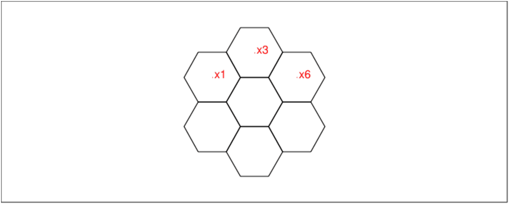
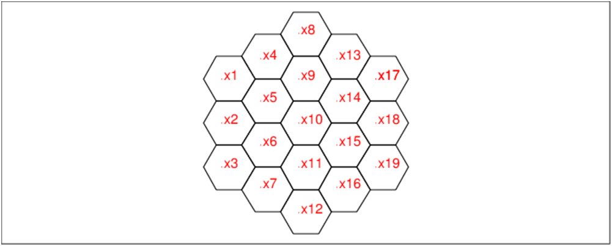

Soit A la matrice :
A=[[a00,a01,a02],[a10,a11,a12],[a20,a21,a22]]
Montrer que :
B=1/2*(A+tran(A)) est une matrice symértrique et
C=1/2*(A−tran(A)) est une matrice antisymértrique.
En déduire que toute matrice se décompose de façon unique en la somme
d’une matrice symétrique et d’une matrice antisymétrique.
On tape :
A:=[[a00,a01,a02],[a10,a11,a12],[a20,a21,a22]]
B:=1/2*(A+tran(A));C:=1/2*(A-tran(A))
normal(B-tran(B)),normal(C+tran(C))
On obtient :
[[0,0,0],[0,0,0],[0,0,0]],[[0,0,0],[0,0,0],[0,0,0]]
Si A=M+N avec tran(M)=M et tran(N)=−N alors tran(A)=M−N donc
M=1/2*(A+tran(A))=B et N=1/2*(A−tran(A))=C d’où l’unicité.
Une matrice A=(aj,k) d’ordre 3 est une matrice magique de somme s lorsque
les 8 sommes :
∑j=02aj,k=s pour k=0,1,2 (somme de chaque colonne)
∑k=02aj,k=s pour j=0,1,2 (somme de chaque ligne)
∑j=02aj,j=a1,3+a2,2+a3,1=s (somme de chaque diagonale).
Déterminer les matrices magiques d’ordre 3 qui sont antisymétriques.
Déterminer les matrices magiques d’ordre 3 qui sont symétriques de somme
s=0.
Déterminer une matrice magique d’ordre 3, symétrique, de somme s et la plus simple possible.
Montrer que la différence de 2 matrices symétriques magiques de somme s est une matrices symétriques magiques de somme s=0.
En déduire toutes les matrices magiques d’ordre 3, symétriques de somme s.
Trouver toutes les matrices magiques d’ordre 3 de somme s=3.
Trouver toutes les matrices magiques d’ordre 3 de somme s=9.
Les matrices magiques d’ordre 3 qui sont antisymétriques sont de somme s=0
car la diagonale principale ne contient que des 0.
Soit A une matrice antisymétrique d’ordre 3 et magique de somme s=0.
On tape :
A:=[[0,a,b],[-a,0,c],[-b,-c,0]]
linsolve([a+b=0,-a+c=0,b+c=0],[a,b,c])
On obtient :
[c,-c,c]
Donc les matrices magiques A d’ordre 3 qui sont antisymétriques sont :
A=(
| 0 | c | −c |
| −c | 0 | c |
| c | −c | 0 |
)=c(
| 0 | 1 | −1 |
| −1 | 0 | 1 |
| 1 | −1 | 0 |
)
On tape :
A:=c*[[0,1,-1],[-1,0,1],[1,-1,0]]
Soit S une matrice symétrique d’ordre 3 et magique de somme s=0.
On tape :
S:=[[a,b,c],[b,d,e],[c,e,f]]
linsolve([a+b+c,a+d+f,b+d+e,c+e+f,2c+d],[a,b,c,d,e,f])
On obtient :
[-f,f,0,0,-f,f]
Donc les matrices magiques S d’ordre 3 qui sont symétriques de somme s=0
sont :
S=(
| −f | f | 0 |
| f | 0 | −f |
| 0 | −f | f |
)=f(
| −1 | 1 | 0 |
| 1 | 0 | −1 |
| 0 | −1 | 1 |
)
Soit S0 une matrice symétrique d’ordre 3 et magique de somme s la plus simple possible.
On tape :
S0:=s/3*[[1,1,1],[1,1,1],[1,1,1]]
Donc les matrices magiques S d’ordre 3 qui sont symétriques de somme s
sont B:=S+S0:
On tape :
f*[[-1,1,0],[1,0,-1],[0,-1,1]]+s/3*[[1,1,1],[1,1,1],[1,1,1]]
Donc les matrices magiques M d’ordre 3 qui sont de somme s=3 (resp s=12)
sont M:=A+S+S0 et elles dépendent de 2 paramètres c et f.
On tape :
M:=c*[[0,1,-1],[-1,0,1],[1,-1,0]]+
f*[[-1,1,0],[1,0,-1],[0,-1,1]]+[[1,1,1],[1,1,1],[1,1,1]]
On obtient :
[[-f+1,c+f+1,-c+1],[-c+f+1,1,c-f+1],[c+1,-c-f+1,f+1]]
Par exemple f=1,c=0, on obtient
[[0,2,1],[2,1,0],[1,0,2]].
On tape :
M:=c*[[0,1,-1],[-1,0,1],[1,-1,0]]+
f*[[-1,1,0],[1,0,-1],[0,-1,1]]+4*[[1,1,1],[1,1,1],[1,1,1]]
On obtient :
[[-f+4,c+f+4,-c+4],[-c+f+4,4,c-f+4],[c+4,-c-f+4,f+4]]
Par exemple f=1,c=3, on obtient un carré magique eulérien (les entiers
0..8 apparaissent dans les 9 cases du carré) :
[[3,8,1],[2,4,6],[7,0,5]].
Ce qui suit a èté inspiré par une épreuve à l’oral de l’agrégation
externe de Mathématiques session 2005 dont voila le lien :
http://agreg.dnsalias.org/Textes/561.pdf
et par le livre Problèmes plaisants et délectables par Claude-Gaspar Bachet
sieur de Mérignac.
carré magique d’ordre n veut dire que l’on a une matrice carrèe de
dimension n, à coefficients dans ℕ et telle que les sommes des
éléments de chaque ligne, de chaque colonne et de chacune des 2 diagonales
sont égales :
si A=aj,k pour j=0..n−1,k=0..n−1 on a :
∑k=0n−1aj,k=s pour j=0..n−1
∑j=0n−1aj,k=s pour k=0..n−1
∑j=0n−1aj,j=s
∑j=0n−1aj,n−j−1=s
carré latin d’ordre n veut dire que les entiers 0..n−1 apparaissent
dans chaque ligne, dans chaque colonne et dans les 2 diagonales du carré. La
somme s est alors égale à n(n−1)/2
carré latin pandiagonal d’ordre n veut dire que l’on a un carré
magique latin qui possède en plus la propriété : les entiers 0..n−1
apparaissent aussi dans les n diagonales brisées du carré (lorsqu’on
considère le carré comme un tore). La somme s est égale à n(n−1)/2
carré eulérien d’ordre n veut dire que chacun
des entiers 0..n2−1 apparaissent dans les n2 cases du carré. La somme
s est alors égale à n(n2−1)/2
carré eulérien pandiagonal d’ordre n veut dire que l’on a un carré
magique eulérien d’odre n qui possède en plus la propriété : la somme
de chacune des 2n−2 diagonales brisées (lorsqu’on considère le carré
comme un tore) vaut aussi n(n2−1)/2.
Écrire un programme Xcas qui teste si une matrice est un carré
magique latin pandiagonal.
On tape dans un éditeur de programme :
estlatinp(A):={
local s,n,j,k,L;
n:=size(A);
pour j de 0 jusque n-1 faire
L:=A[j];
si is_permu(L)==0 alors retourne faux; fsi;
fpour;
pour j de 0 jusque n-1 faire
L:=col(A,j);
si is_permu(L)==0 alors retourne faux; fsi;
fpour;
pour j de 0 jusque n-1 faire
L:=A[k,irem(j+k,n)]$(k=0..n-1);
si is_permu(L)==0 alors retourne faux; fsi;
fpour;
pour j de 0 jusque n-1 faire
L:=A[k,irem(j-k,n)]$(k=0..n-1);
si is_permu(L)==0 alors retourne faux; fsi;
fpour;
retourne vrai;
}
:;
Écrire un programme Xcas qui teste si une matrice est un carré
magique eulérien pandiagonal.
On tape dans un éditeur de programme :
esteulerp(A):={
local n,s,j,k,rep,L,C,D,M;
L:=mat2list(A);
si is_permu(L)==0 alors retourne faux fsi;
rep:=true;
n:=size(A);
s:=n*(n^2-1)/2;
L:=unapply(sum(A[j,k],k=0..n-1),j);
C:=unapply(sum(A[j,k],j=0..n-1),k);
D:=unapply(sum(A[j,irem(j+k,n)],j=0..n-1),k);
M:=unapply(sum(A[j,irem(k-j,n)],j=0..n-1),k);
pour j de 0 jusque n faire
si L(j)!=s ou C(j)!=s ou D(j)!=s ou M(j)!=s alors
rep:=faux; break;
fsi;
fpour;
retourne rep;
}
:;
On remarque que si les n lignes et n−1 colonnes (resp n lignes et n−1
diagomales montantes, n lignes et n−1 diagomales descendantes) sont de
même somme s alors les n colonnes (resp les n diagomales montantes, les
n diagomales descendantes) sont de même somme s.
On tape plus simplement pour savoir si A est un carré eulérien
pandiagonal :
estpandiage(A):={
local j,k,n,s,L;
L:=mat2list(A);
si is_permu(L)==0 alors retourne faux fsi;
n:=size(A);
s:=n*(n^2-1)/2;
si [sum(A[j,k],j,0,n-1)$(k=0..n-1)]!=[s $(k=0..n-1)] alors
retourne faux;
fsi;
si [sum(A[k,j],j,0,n-1)$(k=0..n-2)]!=[s $(k=0..n-2)] alors
retourne faux;
fsi;
si [sum(A[j,irem(j+k,n)],j,0,n-1)$(k=0..n-2)]!=[s $(k=0..n-2)] alors
retourne faux;
fsi;
si [sum(A[j,irem(-j+k,n)],j,0,n-1)$(k=0..n-2)]!=[s $(k=0..n-2)] alors
retourne faux;
fsi;
retourne vrai;
}
:;
Cette règle permet d’écrire des carrés magiques eulériens pandiagonaux
d’ordre n lorsque n est impair et non divisible par 3.
On considère le carré comme un tore et on applique la règle :
Écrire un programme Xcas qui renvoie un carré magique eulérien
construit selon cette règle.
On tape dans un éditeur de programme :
cavalier(n,l,c):={
local j,k,A;
si irem(n,2)==0 ou irem(n,3)==0
alors retourne "n !=2k et n !=3k";
fsi
l:=irem(l,n);c:=irem(c,n);
A:=idn(n);
pour j de 0 jusque n-1 faire
pour k de 0 jusque n-2 faire
A[l,c]:=k+n*j;
l:=irem(l+1,n);
c:=irem(c+2,n);
fpour;
A[l,c]:=k+n*j;
c:=irem(c-1,n);
fpour;
return A;
}
:;
On tape : C:=cavalier(5,0,0)
On obtient :
[[0,24,18,12,6],[13,7,1,20,19],[21,15,14,8,2], [9,3,22,16,10],[17,11,5,4,23]] c’est à dire :
|
On peut traduire cela avec des couleurs. On tape :
lignec(n,k,C):={
local j,L;
L:=NULL;
pour j de 0 jusque n-1 faire
L:=L,affichage(carre(j+i*k,j+1+i*k),C[j]+rempli);
fpour;
return L;
}:;
carrec(n,C):={
local j,L,R;
R:=NULL;
pour j de 0 jusque n-1 faire
L:=lignec(n,n-j,C[j])
R:=R,L;
fpour;
return R;
}:;
Puis, carrec(5,C) renvoie :

Remarque
Si on affiche les nombres k modulo n (i.e. irem(k,n)), on obtient un
carré magique latin (latin veut dire que chacun des entiers 0..n−1
apparaissent dans chaque horizontale et verticale du carré et magique veut
dire que la somme des éléments de chaque ligne, de chaque colonne et des 2
diagonales sont identiques et égales à n(n2−1)/2).
Pour l’exemple précédent, on tape :
CR:=irem(cavalier(5,0,0),5) et carrec(5,CR) on obtient :
| 0 | 4 | 3 | 2 | 1 |
| 3 | 2 | 1 | 0 | 4 |
| 1 | 0 | 4 | 3 | 2 |
| 4 | 3 | 2 | 1 | 0 |
| 2 | 1 | 0 | 4 | 3 |

On peut visualiser le déplacement du cavalier en mettant dans chaque case
iquo(k,n) ce qui donne encore un carré latin.
Pour l’exemple précédent, on tape :
CQ:=(C-CQ)/5) et carrec(5,CQ), on obtient :
Pour l’exemple précédent, on obtient :
| 0 | 4 | 3 | 2 | 1 |
| 2 | 1 | 0 | 4 | 3 |
| 4 | 3 | 2 | 1 | 0 |
| 1 | 0 | 4 | 3 | 2 |
| 3 | 2 | 1 | 0 | 4 |

Pour construire des carrés eulériens pandiagonaux, il est souvent plus
agéable d’écrire les coefficients du carré d’ordre n en base n. Tout
entier compris entre 0 et n2−1 s’écrit de manière unique sous la forme
n*a+b où a et b sont des entiers compris entre 0 et n−1.
Définition
On appelle produit AXB de 2 carrés magiques A=aj,k et
B=bj,k de taille n vérifiant aj,k ∈ [0..n−1] et
bj,k ∈ [0..n−1], le carré C=cj,k de taille n tel que :
cj,k=naj,k+bj,k (i.e aj,k,bj,k est l’écriture en base n
de cj,k).
Donc, C:=cavalier(5,0,0) se décompose en le produit de 2 carrés
latins pandiagonaux :
| 0 | 24 | 18 | 12 | 6 |
| 13 | 7 | 1 | 20 | 19 |
| 21 | 15 | 14 | 8 | 2 |
| 9 | 3 | 22 | 16 | 10 |
| 17 | 11 | 5 | 4 | 23 |
=
| 0 | 4 | 3 | 2 | 1 |
| 2 | 1 | 0 | 4 | 3 |
| 4 | 3 | 2 | 1 | 0 |
| 1 | 0 | 4 | 3 | 2 |
| 3 | 2 | 1 | 0 | 4 |
X
| 0 | 4 | 3 | 2 | 1 |
| 3 | 2 | 1 | 0 | 4 |
| 1 | 0 | 4 | 3 | 2 |
| 4 | 3 | 2 | 1 | 0 |
| 2 | 1 | 0 | 4 | 3 |
On peut traduire cela avec des couleurs.
On tape :
lignecc(n,k,C1,C2):={
local j,L;
L:=NULL;
pour j de 0 jusque n-1 faire
L:=L,affichage(rectangle(j+i*k,j+1/2+i*k,2),C1[j]+rempli),
affichage(rectangle(j+1/2+i*k,j+1+i*k,2),C2[j]+rempli);
fpour;
return L;
}:;
carrecc(n,C1,C2):={
local j,L,R;
R:=NULL;
pour j de 0 jusque n-1 faire
L:=lignecc(n,n-j,C1[j],C2[j])
R:=R,L;
fpour;
return R;
}
:;
Puis, C:=cavalier(5,0,0);CR1:=iquo(C,5);CR2:=irem(C,5) carrecc(5,CR1,CR2) renvoie :

Pour cela on va déterminer une expression générale de A[j,k] en
fonction de j et k lorsque l’on met A[0,0]=0 et que l’on applique
l’algorithme du cavalier.
Pour cela on écrit A[j,k] en base n :
A[j,k]=naj,k+bj,k avec aj,k∈ [0..n−1] et bj,k∈ [0..n−1].
On a d’après l’algorithme du cavalier :
a0,0=0 et b0,0=0
aj+1,k+2=aj,k et bj+1,k+2=bj,k+1 si 0≤ bj,k<n−1 et
aj,k−1=aj,k+1 et bj,k−1=bj,k+1=0 modn si bj,k=n−1
Le nombre A[j,k]=naj,k+bj,k a donc comme indice de ligne
j=bj,k−aj,k modn.
En effet, quand aj,k=0 on a j=bj,k, puis quand
aj,k=1 et bj,k=0 on a j=n−1=bj,k−aj,k modn etc...
Le nombre A[j,k]=naj,k+bj,k a donc comme indice de colonne
k=2bj,k−3aj,k modn.
En effet, quand aj,k=0 on a k=2bj,k modn,
donc on a bien k=2bj,k−3aj,k modn
puis quand aj,k=1 et bj,k=0 on a bj,k+1=bj,k−1 modn et
aj,k+1=aj,k−1 donc :
bj,k=bj,k+1+1=0 modn et
k+1=2bj,k+1−3aj,k+1=2bj,k−2−3aj,k+3=2bj,k−3aj,k+1 modn (car
aj,k+1=0 et d’après ce qui précéde si aj,k+1=0 on a k+1=2bj,k+1 modn et bj,k−1+1=0 modn)
donc k=2bj,k−3aj,k modn etc...
On a donc :
j=bj,k−aj,k modn et k=2bj,k−3aj,k modn donc
2j−k=aj,kmodn et 3j−k=bj,kmodn donc
aj,k=2j−k modn et bj,k=3j−k modn.
A est un carré eulérien pandiagonal.
En effet, les nombres A[j,k] sont tous différents, car si
naj1,k1+bj1,k1=naj2,k2+bj2,k2 alors
aj1,k1=aj2,k2 et bj1,k1=bj2,k2 donc
2j1−k1 =2j2−k2 modn et 3j1−k1 =3j2−k2 modn donc
k2−k1=2j2−2j1=3j2−3j1 donc j1=j2 et k1=k2.
Sur les aj,k et les bj,k forment un carré latin pandiagonal d’odre
n car sur une même ligne les aj,k (respectivement les bj,k)
sont tous différents en effet :
si aj1,k1=aj1,k2 (resp bj1,k1=bj1,k2) alors
2j1−k1 =2j1−k2 modn et 3j1−k1 =3j1−k2 modn
donc k1=k2.
Si n n’est pas un multiple de 2 ni un multiple de 3, sur une même colonne
les aj,k (respectivement les bj,k) sont tous différents en effet :
si aj1,k1=aj2,k1 (resp bj1,k1=bj2,k1) alors
2j1−k1 =2j2−k1 modn (resp 3j1−k1 =3j2−k1 modn)
donc 2(j1−j2)=0 modn (resp 3(j1−j2)=0 modn)
comme 2 et ne divisent pas n on en déduit que j1=j2.
Sur les diagonales descendantes les aj,k (respectivement les bj,k) sont tous différents en effet si :
aj1,k1+j1=aj2,k1+j2 (resp bj1,k1+j1=bj2,k1+j2) alors
2j1−k1−j1 =2j2−k1−j2 modn et 3j1−k1−j1 =3j2−k1−j2 modn
donc j1=j2 (resp j1=j2 car 2 ne divise pas n)
Sur les diagonales montantes les aj,k (respectivement les bj,k) sont
tous différents en effet si :
aj1,k1−j1=aj2,k1−j2 (resp bj1,k1−j1=bj2,k1−j2) alors
2j1−k1+j1 =2j2−k1+j2 modn et 3j1−k1+j1 =3j2−k1+j2 modn
donc j1=j2 car 3 et 4 ne divisent pas n.
Donc les carrés aj,k et bj,k sont des carrés latins pandiagonaux.
Comme les nombres A[j,k] sont tous différents, on en déduit que A est
un carré eulérien pandiagonal.
Lorsque n=5 l’algorithme du cavalier a produit un carré eulérien
pandiagonal qui était le produit de 2 carrés latins pandiagonaux. On va
donc essayer de produire des carrés eulériens pandiagonaux comme produit de
2 carrés latins pandiagonaux.
Définition
On dit que p est un générateur interne de ℤ/nℤ si p, p−1 et p+1
sont des générateurs de ℤ/nℤ (i.e p, p−1 et p+1 doivent être
premier avec n).
Remarque si n est pair ou si n est un multiple de 3, ℤ/nℤ ne
posséde pas de générateur interne.
Revenons à l’exemple obtenu avec la règle du cavalier pour n=5 :
C = A X B =
| 0 | 24 | 18 | 12 | 6 |
| 13 | 7 | 1 | 20 | 19 |
| 21 | 15 | 14 | 8 | 2 |
| 9 | 3 | 22 | 16 | 10 |
| 17 | 11 | 5 | 4 | 23 |
=
| 0 | 4 | 3 | 2 | 1 |
| 2 | 1 | 0 | 4 | 3 |
| 4 | 3 | 2 | 1 | 0 |
| 1 | 0 | 4 | 3 | 2 |
| 3 | 2 | 1 | 0 | 4 |
X
| 0 | 4 | 3 | 2 | 1 |
| 3 | 2 | 1 | 0 | 4 |
| 1 | 0 | 4 | 3 | 2 |
| 4 | 3 | 2 | 1 | 0 |
| 2 | 1 | 0 | 4 | 3 |
On remarque que :
le carré A est obtenu en mettant sur la première ligne, une permutation
σ de 0..4 (ici σ([0,1,2,3,4])=[0,4,3,2,1]), puis la deuxième
ligne est obtenue en décalant la première ligne vers la droite de 2 cases
(i.e. A[1,k)=A[0,k+2] pour k=0..4) ce qui donne [2,1,0,4,3] etc...
le carré B est obtenu en mettant sur la première ligne la même
permutation de 0..4 [0,4,3,2,1], puis la deuxième ligne est obtenue
en décalant la première ligne vers la droite de 3 cases
(i.e. B[1,k)=A[0,k+3] pour k=0..4) ce qui donne [3,2,1,0,4] etc...
On établit les résultats suivants :
Théorème1
La donnée de toute permutation σ de 0..n−1 et de tout générateur
p interne de ℤ/nℤ définit un carré latin de taille n.
Définition le carré latin ainsi construit est dit de type
(σ, p).
Si A est un carré latin de taille n et de type (σ, p) on a :
A[0,k)=σ([0,..n−1]) pour k=0..n−1
A[j+1,k)=A[j,k+p modn] pour j=0..n−1 et pour k=0..n−1
p engendre ℤ/nℤ donc p modn, p+1 modn, p+n−1 modn est une
permutation de [0,..n−1].
Donc les lignes de A sont des permutations de [0,..n−1]
Les colonnes de A sont telles que :
A[j,0]=A[j−1,p]=A[j−2,2p modn]=..A[0,j*pmodn] et
pour pour j fixé et k=0..n−1, on a :
A[j,k]=A[j−1,p+kmodn]=A[j−2,2p+kmodn]=..=A[0,j*p+kmodn]
Donc les colonnes de A sont des permutations de [0,1..n−1]
Les diagonales descendantes de A sont telles que pour k fixé et
j=0..n−1 on a :
A[j,j+kmodn]=A[0,j*(p+1)+kmodn]
p+1 engendre ℤ/nℤ donc les diagonales descendantes de A sont des
permutations de [0,..n−1]
Les diagonales montantes de A sont telles que pour k fixé et
j=0..n−1 on a :
A[j,−j+kmodn]=A[0,j*(p−1)+kmodn]
p−1 engendre ℤ/nℤ donc les diagonales montantes de A sont des
permutations de [0,..n−1].
Théorème2 Le produit de 2 carrés latins de taille n et de types
(σ, p) et (σ, q) est un carré eulérien pandiagonal si
p−q modn est un générateur de ℤ/nℤ.
En effet, soient A et B deux carrés d’ordre n où A est de type
(σ, p) et B est de type (σ, q). (où σ est une
bijection de [0,1..n−1] dans [0,1..n−1] et p−1modn, p, p+1modn,
q−1modn, q, q−1modn, p−q modn sont des générateurs de
ℤ/nℤ).
On a par construction de A et B :
σ(k)=A[0,k]=B[0,k]
A[1,k]=A[0,k−p modn]=σ(k−pmodn) et
A[j,k]=A[j,k−p*j modn]=σ(k−p*jmodn)
B[1,k]=B[0,k−q modn]=σ(k−qmodn) et
B[j,k]=B[j,k−q*j modn]=σ(k−q*jmodn)
On pose C[j,k]=n*A[j,k]+B[j,k] et montrons que C est un carré eulérien
pandiagonal.
Chacun des entiers compris entre 0 et n2−1 sont les coefficients de C.
En effet les coefficients de C sont dans [0,1..n−1] et ils sont tous
différents car si :
C[j1,k1]=n*A[j1,k1]+B[j1,k1]=C[j2,k2]=n*A[j2,k2]+B[j2,k2], on a :
A[j1,k1]=A[j2,k2] et B[j1,k1]=B[j2,k2] (unicité de l’écriture en base
n) c’est à dire :
σ(k1−p*j1modn)=σ(k2−p*j2modn) et
σ(k1−q*j1modn)=σ(k2−q*j2modn)= et comme
σ est une bijection on a :
k1−k2=p*(j1−j2)=q(j1−j2) modn donc
(p−q)(j1−j2)=0modn donc j1=j2 (puisque p−q modn est un
générateur de ℤ/nℤ) et k1=k2.
Le carré C est pandiagonal car les 4n sommes des lignes, des colonnes,
des diagonales de A et de B sont égales à n(n−1)/2 (d’après le th 1)
donc les sommes des lignes, des colonnes, des diagonales de C sont égales
à (n+1)n(n−1)/2=n(n2−1)/2
Voici le programme du produit de 2 carrés A=aj,k et
B=bj,k de taille n vérifiant aj,k ∈ [0,1..n−1].
On écrit le programme estdansnz(A) qui vérifie que les A[j,k] sont
dans 0,1,..n−1 lorsque A est une matrice carrée de dimension n.
Puis, on écrit le programme produitcar(A,B) qui renvoie le produit de
2 carrés de dimension n dont les éléments sont dans 0,1,..n−1.
On tape :
estdansnz(A):={
local L,j,n1,rep;
L:=mat2list(A);
n1:=dim(L)-1;
rep:=vrai;
pour j de 0 jusque n1 faire
si L[j]<0 ou L[j]>n1 alors retourne faux; fsi;
fpour;
retourne vrai;
}:;
produitcar(A,B):={
local j,k,C,sa,sb,n;
n:=size(A);
sa:=dim(A);
sb:=dim(B);
si sa!=[n,n] ou sb!=[n,n] ouestdansnz(A)==faux ou estdansnz(B)==faux alors
retourne "erreur"; fsi;
C:=idn(n);
pour j de 0 jusque n-1 faire
pour k de 0 jusque n-1 faire
C[j,k]:=n*A[j,k]+B[j,k];
fpour;
fpour;
retourne C;
}:;
On tape :
A:=[[0,4,3,2,1],[2,1,0,4,3],[4,3,2,1,0],[1,0,4,3,2],[3,2,1,0,4]]
B:=[[0,4,3,2,1],[3,2,1,0,4],[1,0,4,3,2],[4,3,2,1,0],[2,1,0,4,3]]
C:=produitcar(A,B)
On obtient :
[[0,24,18,12,6],[13,7,1,20,19],[21,15,14,8,2],[9,3,22,16,10],[17,11,5,4,23]]
On tape :
estpandiage(C)
On obtient :
vrai
Nous allons écrire un algorithme qui va renvoyer toutes les permutations de l=[0..n−1] Les fonctions que l’on va écrire vont utiliser la fonction echange.
//echange ds l les elements d'indices j et k
echange(l,j,k):={
local a;
a:=l[j];
l[j]:=l[k];
l[k]:=a;
return l;
}:;
On peut décrire l’arbre des permutations de la liste l[0..n−1] :
à partir de la racine on a n=size(l) branches. Chaque branche
commence respectivement par chacun des éléments de la liste l.
On va donc parcourir cet arbre de la racine (nœud de niveau 0) aux
différentes extrémités, en renvoyant la liste des branches parcourues
pour arriver à cette extrémité.
On va parcourir cet arbre en parcourant les n branches. On numérote ces n
branches par p=0..n−1 et le niveau des nœuds q=0..n−1.
On aura donc n appels récursifs.
Chaque branche p (p=0..n−1) peut être considérée à leur tour comme
un arbre ayant n−1 branches. La branche p aboutit aux permutations qui
laissent invariant le p-ième élément de l (l[p−1]).
C’est cet élément que l’on va échanger avec l[0] pour que chaque
branche p laisse invariant l’ élément l[0].
On sait que l’on est arrivé au bout de la branche, quand on se trouve au
nœud de niveau n−1, dans ce cas la permutation chechée est l (c’est
la permutation obtenue à partir de l en laissant ces n−1 premiers
éléments invariants).
On utilise une variable locale lr, égale à la liste à renvoyer et
un paramètre k, pour que permuts(l,k) renvoie toutes les
permutations de l qui laissent invariant les k premiers éléments de
l. On tape :
//permuts([1,2,3,4],0) utilise echange
permuts(l,k):={
local lr,j;
if (k==size(l)-1) return [l];
lr:=[];
for (j:=k;j<size(l);j++){
l:=echange(l,k,j);
lr:=[op(lr),op(permuts(l,k+1))];
}
return lr;
}:;
Remarque On n’est pas obligé de remettre la suite l à sa valeur de
départ pour recommencer l’itération puisque le premier échange dans
l’itération revient à transformer l en la liste où on a mis son
j-ième élément en tête (j=0..n−1).
Comme il faut 2 paramètres pour écrire la fonction récursive
permuts, on écrit la fonction permutation qui utilise
permuts:
//l:=[0,1,2,3];permutation(l);
//renvoie toutes les permutations de l
//utilise permuts
permutation(l):={
return permuts(l,0);
};
On tape :
permutation([0,1,2])
On obtient :
[[0,1,2],[0,2,1],[1,0,2],[1,2,0],[2,0,1],[2,1,0]]
Définition
On dit que k%n est un générateur interne de ℤ/nℤ si
k%n,(k−1)%n,(k+1)%n sont des gérnérateurs de ℤ/nℤ.
Donc k%n est un générateur interne de ℤ/nℤ si k,k−1,k+1 sont
premiers avec n.
Si n est un multiple de 2 ou 3 il n’y a donc pas de générateurs de
ℤ/nℤ.
Si n est premier les générateurs de ℤ/nℤ sont tous les entiers entre
2 et n−2 :2,3..n−2.
Pour faire le programme, on parcourt tous les entiers entre 1 et n−1.
On compte combien d’entiers consécutifs sont premiers avec n. Ici c’est
j0,..j−1 le j étant celui qui a fait sortir du tantque :
tantque j<=n-1 and d==1 (i.e. j==n ou d=gcd(j,n)!=1)
si ce nombre (qui est égal à j−j0) est supérieur ou égal à 3 on
rajoute comme générateur j0+1..j-2.
puis on fait progresser j jusqu’à avoir d=gcd(j,n)==1 ou j==n
à la sortie du tantque :
tantque j<=n-1 and d!=1.
Puis on recommence...jusqu’à j==n
latin(P,p):={
local A,j,k;
n:=size(P);
A:=idn(n);
A[0]:=P;
pour j de 1 jusque n-1 faire
pour k de 0 jusque n-1 faire
A[j,k]:=P[irem(k-j*p,n)];
fpour;
fpour;
return A;
}:;
generateur(n):={
local L,d,j,j0;
L:=NULL;
si irem(n,2)==0 or irem(n,3)==0 then return L;fsi;
si isprime(n) alors return j$(j=2..n-2);fsi;
j:=1;
tantque j<=n-1 faire
j0:=j;
d:=gcd(j,n);
tantque j<=n-1 and d==1 faire
j:=j+1;
d:=gcd(j,n);
ftantque;
si j-j0>=3 alors
L:=L,j$(j=j0+1..j-2);
fsi;
j:=j+1;
d:=gcd(j,n);
tantque j<=n-1 and d!=1 faire
j:=j+1;
d:=gcd(j,n);
ftantque;
ftantque;
return L;
}:;
On tape :
estgenerateur(p,n):={
local G;
p:=irem(p,n);
G:=generateur(n);
si member(p,G)==0 alors return faux;fsi
return vrai;
}:;
carrep(n):={
local G,P,L,j,k,A,B,p,q,s;
si irem(n,3)==0 ou irem(n,2)==0 alors renvoie "erreur2" fsi;
G:=generateur(n);
L:=[j$(j=0..n-1)];
P:=permutation(L);
s:=size(G);
k:=alea(s);
p:=G[k];
k:=alea(s);
q:=G[k];
tantque estgenerateur(p-q,n)==0 faire
k:=alea(s);
q:=G[k];
ftantque;
s:=size(P);
k:=alea(s);
P:=P[k];
A:=latin(P,p);
B:=latin(P,q);
retourne produitcar(A,B);
}
:;
Voici le regroupemenr de tous les programmes utilisés :
estpandiage(A):={
local j,k,n,s,L;
L:=mat2list(A);
si is_permu(L)==0 alors retourne faux fsi;
n:=size(A);
s:=n*(n^2-1)/2;
si [sum(A[j,k],j,0,n-1)$(k=0..n-1)]!=[s $(k=0..n-1)] alors
retourne faux;
fsi;
si [sum(A[k,j],j,0,n-1)$(k=0..n-2)]!=[s $(k=0..n-2)] alors
retourne faux;
fsi;
si [sum(A[j,irem(j+k,n)],j,0,n-1)$(k=0..n-2)]!=[s $(k=0..n-2)] alors
retourne faux;
fsi;
si [sum(A[j,irem(-j+k,n)],j,0,n-1)$(k=0..n-2)]!=[s $(k=0..n-2)] alors
retourne faux;
fsi;
retourne vrai;
}
:;
estdansnz(A):={
local L,j,n1,rep;
L:=mat2list(A);
n1:=dim(L)-1;
rep:=vrai;
pour j de 0 jusque n1 faire
si L[j]<0 ou L[j]>n1 alors retourne faux; fsi;
fpour;
retourne vrai;
}:;
produitcar(A,B):={
local j,k,C,sa,sb,n;
n:=size(A);
sa:=dim(A);
sb:=dim(B);
si sa!=[n,n] ou sb!=[n,n] ou estdansnz(A)==faux ou estdansnz(B)==faux alors
retourne "erreur1"; fsi;
C:=idn(n);
pour j de 0 jusque n-1 faire
pour k de 0 jusque n-1 faire
C[j,k]:=n*A[j,k]+B[j,k];
fpour;
fpour;
retourne C;
}:;
echange(l,j,k):={
local a;
a:=l[j];
l[j]:=l[k];
l[k]:=a;
return l;
}:;
permuts(l,k):={
local lr,j;
if (k==size(l)-1) return [l];
lr:=[];
for (j:=k;j<size(l);j++){
l:=echange(l,k,j);
lr:=[op(lr),op(permuts(l,k+1))];
}
return lr;
}:;
permutation(l):={
return permuts(l,0);
}:;
latin(P,p):={
local A,j,k;
n:=size(P);
A:=idn(n);
A[0]:=P;
pour j de 1 jusque n-1 faire
pour k de 0 jusque n-1 faire
A[j,k]:=P[irem(k-j*p,n)];
fpour;
fpour;
return A;
}:;
generateur(n):={
local L,d,j,j0;
L:=NULL;
si irem(n,2)==0 or irem(n,3)==0 then return L;fsi;
si isprime(n) alors return j$(j=2..n-2);fsi;
j:=1;
tantque j<=n-1 faire
j0:=j;
d:=gcd(j,n);
tantque j<=n-1 and d==1 faire
j:=j+1;
d:=gcd(j,n);
ftantque;
si j-j0>=3 alors
L:=L,j$(j=j0+1..j-2);
fsi;
j:=j+1;
d:=gcd(j,n);
tantque j<=n-1 and d!=1 faire
j:=j+1;
d:=gcd(j,n);
ftantque;
ftantque;
return L;
}:;
estgenerateur(p,n):={
local G;
p:=irem(p,n);
G:=generateur(n);
si member(p,G)==0 alors return faux;fsi
return vrai;
}:;
carrep(n):={
local G,P,L,j,k,A,B,p,q,s;
si irem(n,3)==0 ou irem(n,2)==0 alors renvoie "erreur2" fsi;
G:=generateur(n);
L:=[j$(j=0..n-1)];
P:=permutation(L);
s:=size(G);
k:=alea(s);
p:=G[k];
k:=alea(s);
q:=G[k];
tantque estgenerateur(p-q,n)==0 faire
k:=alea(s);
q:=G[k];
ftantque;
s:=size(P);
k:=alea(s);
P:=P[k];
A:=latin(P,p);
B:=latin(P,q);
retourne produitcar(A,B);
}
:;
On tape :
C:=carrep(7)
On obtient
[[16,48,24,8,0,40,32],[26,11,2,41,31,15,42],[1,35,33,18,44,27,10],
[34,17,43,21,12,4,37],[46,23,13,3,36,28,19],[7,5,39,30,20,45,22],
[38,29,14,47,25,9,6]]
On tape :
estpandiage(C)
On obtient
vrai
Y-a-t-il des carres eulériens pandiagonaux d’ordre 2, d’ordre 3, d’ordre 4 ?
Rappel
Dans Xcas il y a l’instruction is_permu
qui teste si une liste de dimension n est une permutation de 0..n−1.
Dans Xcas il y a l’instruction mat2list qui transforme une matrice
en une liste. Ainsi is_permu(mat2list(A)) nous dira si la matrice
carrée A de dimension n est un carré eulérien d’ordre n i.e.
chacun des nombres 0..n2−1 apparait dans les n2 cases du carré.
Remarque
Si un carré d’ordre n est eulérien, pour qu’il soit pandiagonal il doit
satisfaire à 4n équations. Mais comme la somme :
∑k=0n2−1=n2(n2−1)/2,
la somme des éléments de chacune des 4n rangées (i.e lignes ou colonnes
ou diagonales montantes ou descendantes) vaut donc s=n(n2−1)/2. Il suffit
donc de satisfaire à 4n−3 équations (par exemple n équations pour les
lignes, n−1 pour les colonnes, n−1 pour les diagonales montantes et n−1
pour les diagonales descendantes).
Cherchons si il y a des carrés magiques pandiagonaux d’ordre 2.
Il y a 5 équations à satisfaire pour 4 inconnues.
0n tape :A2:=[[x0,x1],[y0,y1]]; V2:=mat2list(A2)
VS2:=linsolve([x0+x1-3,y0+y1-3,x0+y0-3,x1+y1-3,x0+y1-3,x1+y0-3],V)
On obtient : [3/2,3/2,3/2,3/2]
Les 5 équations ne sont donc pas indépendantes.
Il n’y a donc pas de carrés magiques eulériens pandiagonaux d’ordre 2.
Cela était prévisible car la somme serait égale à 3 et donc on doit
mettre 3 dans la ligne qui contient 0 et aussi 3 dans la colonne qui
contient 0.
Cherchons si il y a des carrés magiques pandiagonaux d’ordre 3.
Il y a 9 équations à satisfaire pour 9 inconnues.
0n tape :A3:=[[x0,x1,x2],[y0,y1,y2],[z0,z1,z2]];V3:=mat2list(A3);
VS3:=linsolve([x0+x1+x2+-12,y0+y1+y2-12,z0+z1+z2-12,x0+y0+z0-12,x1+y1+z1-12,x2+y2+z2-12,x0+y1+z2-12,x1+y2+z0-12,x2+y0+z1-12,x2+y1+z0-12,
x0+y2+z1-12,x1+y0+z2-12],V3)
On obtient : [4,4,4,4,4,4,4,4,4]
Il n’y a donc pas de carrés magiques pandiagonaux d’ordre 3.
Cela était encore prévisible car la somme serait égale à 12. On a :
8+3+1=8+4+0=12 donc on ne peut pas mettre des nombres différents, dans la
colonne du 8, dans la ligne du 8 et dans les diagonales contenant 8.
Cherchons si il y a des carrés magiques pandiagonaux d’ordre 4.
0n tape :
A4:=[[x0,x1,x2,x3],[y0,y1,y2,y3],[z0,z1,z2,z3],[t0,t1,t2,t3]];
V4:=mat2list(A4)
Il y a 13 équations à satisfaire pour 16 inconnues (s=30). On a donc nos
chances !
linsolve([x0+x1+x2+x3-30,y0+y1+y2+y3-30,z0+z1+z2+z3-30,
t0+t1+t2+t3-30,x0+y0+z0+t0-30,x1+y1+z1+t1-30,x2+y2+z2+t2-30,
x3+y3+z3+t3-30,x0+y1+z2+t3-30,x1+y2+z3+t0-30,x2+y3+z0+t1-30,
x3+y0+z1+t2-30,x0+y3+z2+t1-30,x1+y0+z3+t2-30,x2+y1+z0+t3-30,
x3+y2+z1+t0-30],V4)
On obtient :
[t2+t3+z3-15,-z3+15,-t1-t2+z3+15,t1-t3-z3+15,-t2+15,
-t3+15,t1+t2+t3-15,-t1+15,t1+t2-z3,-t1+t3+z3,-t2-t3-z3+30,
z3,-t1-t2-t3+30,t1,t2,t3]
On en déduit que les 13 équations ne sont pas indépendantes :
On remarque que si on fait la sommes des 6 rangées ci-dessous la sommes des
cases notées par des points rouges est comptés 3 fois donc ces 4 cases
ont aussi comme somme s ce qui entraine que la somme des 4 cases situées
aux sommets vaut aussi s.

On en déduit que la somme des cases A,B,C,D,E,F,G,H vaut 2s,
c’est à dire que si la somme des cases A,B,C,D vaut s cela entraine que
la somme des cases E,F,G,H vaut aussi s.
On tape :
L4(z3,t1,t2,t3):=[t2+t3+z3-15,-z3+15,-t1-t2+z3+15,t1-t3-z3+15,
-t2+15,-t3+15,t1+t2+t3-15,-t1+15,t1+t2-z3,-t1+t3+z3,-t2-t3-z3+30,
z3,-t1-t2-t3+30,t1,t2,t3]
puis on va chercher avec un programme les valeurs de z3,t1,t2,t3 pour
lesquelles on a des carrés eulériens. Pour cela on va faire varier les 4
variables z3,t1,t2,t3 entre 0 et 15.
On tape :
carremp4(L):={
local R,z3,t1,t2,t3;
R:=[];
pour z3 de 0 jusque 15 faire
pour t1 de 0 jusque 15 faire
pour t2 de 0 jusque 15 faire
pour t3 de 0 jusque 15 faire
//si listeab(L(z3,t1,t2,t3),0,15) alors
si is_permu(L(z3,t1,t2,t3)) alors
R:=append(R,[z3,t1,t2,t3]);
fsi
fpour;
fpour;
fpour;
fpour;
return R;
}:;
On tape :
LS4:=carremp4(L4):;
Après "Evaluation time: 15.58", on obtient "Done"
On tape : size(LS4) et on obtient 384
On tape : list2mat(L4(op(LS4[0])),4)
On obtient [[2,15,8,5],[9,4,3,14],[7,10,13,0],[12,1,6,11]]
Si on échange 2 lignes (ou 2 colonnes) dans un carré pandiagonal, on obtient
encore un carré pandiagonal : il y a donc 384/16=24 carrés pandiagonaux
vraiement différents. On peut donc améliorer le programme précédent en
supposant que t3=15.
On tape :
L41(z3,t1,t2):=L4(z3,t1,t2,15)
carremp41(L):={
local R,z3,t1,t2;
R:=[];
pour z3 de 0 jusque 14 faire
pour t1 de 0 jusque 14 faire
pour t2 de 0 jusque 14 faire
si is_permu(L(z3,t1,t2)) alors R:=append(R,[z3,t1,t2]);fsi;
//si listeab(L(z3,t1,t2),0,15) alors R:=append(R,[z3,t1,t2]);fsi;
fpour;
fpour;
fpour;
return R;
}:;
On tape :
LS41:=carremp41(L41):;
Après "Evaluation time: 1.23" on obtient "Done"
size(LS41) renvoie 24 et
list2mat(L41(op(LS41[0])),4) renvoie
[[5,14,9,2],[11,0,7,12],[6,13,10,1],[8,3,4,15]]
Soit :
C:=[[5,14,9,2],[11,0,7,12],[6,13,10,1],[8,3,4,15]]
On écrit C en base 4 on obtient :
[[11,32,21,2],[23,0,13,30],[12,31,22,1],[20,3,10,33]]
c’est à dire :
C=A X B =
| 5 | 14 | 9 | 2 |
| 11 | 0 | 7 | 12 |
| 6 | 13 | 10 | 1 |
| 8 | 3 | 4 | 15 |
=
| 1 | 3 | 2 | 0 |
| 2 | 0 | 1 | 3 |
| 1 | 3 | 2 | 0 |
| 2 | 0 | 1 | 3 |
X
| 1 | 2 | 1 | 2 |
| 3 | 0 | 3 | 0 |
| 2 | 1 | 2 | 1 |
| 0 | 3 | 0 | 3 |
)=
On tape :
A:=[[1,3,2,0],[2,0,1,3],[1,3,2,0],[2,0,1,3]]
B:=[[1,2,1,2],[3,0,3,0],[2,1,2,1],[0,3,0,3]]
C:=produitcar(A,B)
On obtient :
[[5,14,9,2],[11,0,7,12],[6,13,10,1],[8,3,4,15]]
On tape :
estpandiage(C)
On obtient :
vrai
Remarque Pour cet exemple (n=4), dans la décomposition de C en
produit AXB les carrés A et B ne sont pas latins.
Cherchons les 24 carrés d’ordre 4 se terminant par 0
On tape :
LL41(z3,t1,t2):=L4(z3,t1,t2,0)
LLS41:=carremp41(L41):;
size(LLS41)
On obtient :
24
On tape :
list2mat(LL41(op(LLS41[1])),4)$(k=0..23)
On obtient :
[[5,8,6,11],[2,15,1,12],[9,4,10,7],[14,3,13,0]], [[6,8,5,11],[1,15,2,12],[10,4,9,7],[13,3,14,0]], [[3,8,6,13],[4,15,1,10],[9,2,12,7],[14,5,11,0]], [[6,8,3,13],[1,15,4,10],[12,2,9,7],[11,5,14,0]], [[3,8,5,14],[4,15,2,9],[10,1,12,7],[13,6,11,0]], [[5,8,3,14],[2,15,4,9],[12,1,10,7],[11,6,13,0]], [[9,4,10,7],[2,15,1,12],[5,8,6,11],[14,3,13,0]], [[10,4,9,7],[1,15,2,12],[6,8,5,11],[13,3,14,0]], [[3,4,10,13],[8,15,1,6],[5,2,12,11],[14,9,7,0]], [[10,4,3,13],[1,15,8,6],[12,2,5,11],[7,9,14,0]], [[3,4,9,14],[8,15,2,5],[6,1,12,11],[13,10,7,0]], [[9,4,3,14],[2,15,8,5],[12,1,6,11],[7,10,13,0]], [[9,2,12,7],[4,15,1,10],[3,8,6,13],[14,5,11,0]], [[12,2,9,7],[1,15,4,10],[6,8,3,13],[11,5,14,0]], [[5,2,12,11],[8,15,1,6],[3,4,10,13],[14,9,7,0]], [[12,2,5,11],[1,15,8,6],[10,4,3,13],[7,9,14,0]], [[5,2,9,14],[8,15,4,3],[6,1,10,13],[11,12,7,0]], [[9,2,5,14],[4,15,8,3],[10,1,6,13],[7,12,11,0]], [[10,1,12,7],[4,15,2,9],[3,8,5,14],[13,6,11,0]], [[12,1,10,7],[2,15,4,9],[5,8,3,14],[11,6,13,0]], [[6,1,12,11],[8,15,2,5],[3,4,9,14],[13,10,7,0]], [[12,1,6,11],[2,15,8,5],[9,4,3,14],[7,10,13,0]], [[6,1,10,13],[8,15,4,3],[5,2,9,14],[11,12,7,0]], [[10,1,6,13],[4,15,8,3],[9,2,5,14],[7,12,11,0]]
Dans la gravure Melancolia I d’Albrecht Dürer il y a un carré magique en
haut et a droite qui est eulérien (écrit avec les nombres de 1 à 16)
mais il n’est pas pandiagonal. Il peut être représenté (avec les nombres
de 0 à 15) par :
[[15,2,1,12],[4,9,10,7],[8,5,6,11],[3,14,13,0]]
Ce carré a sur ces lignes les mêmes nombres que sur les lignes de ces 3
carrés pandiagonaux :
[[5,8,6,11],[2,15,1,12],[9,4,10,7],[14,3,13,0]], [[9,4,10,7],[2,15,1,12],[5,8,6,11],[14,3,13,0]], [[10,4,9,7],[1,15,2,12],[6,8,5,11],[13,3,14,0]]
Y-a-t-il des carres eulériens pandiagonaux d’ordre 6 ?
On tape :
V6:=[x0,x1,x2,x3,x4,x5,y0,y1,y2,y3,y4,y5,z0,z1,z2,z3,z4,z5,
t0,t1,t2,t3,t4,t5,u0,u1,u2,u3,u4,u5,v0,v1,v2,v3,v4,v5]
M:=list2mat(V6,6)
L(j):=sum(M[j,k],k=0..5)
C(k):=sum(M[j,k],j=0..5)
D(k):=sum(M[j,irem(-j+k,6)],j=0..5)
T(k):=sum(M[j,irem(k+j,6)],j=0..5)
LL:=(L(j)-105)$(j=0..5)
CC:=(C(k)-105)$(k=0..4)
DD:=(D(k)-105)$(k=0..4)
TT:=(T(k)-105)$(k=0..4)
linsolve([LL,CC,DD,TT],V6)[0]
On obtient la valeur de x0 :
t4+t5+u3+u4+u5+v2+v3+v4+v5+z5+(-315)/2
Donc x0 n’est jamais un nombre entier.
Il n’y a donc pas de carrés eulériens pandiagonaux d’ordre 6.
Peut-on placer les entiers de 1 à n dans une structure hexagonale ayant n
hexagones, de façon à ce que la somme des nombres alignés soit constante ?
Pour une structure hexagonale ayant 7 hexagones:

0n voit facilement que cela est impossible puisque si
x1+x3=x3+x6 alors x1=x6
Pour une structure hexagonale ayant 19 hexagones, il faut que les nombres
1,2..19 remplissent les 19 cases afin que la somme de toutes les cases
alignèes soit égale à 38 (en tout 5*3 équations à satisfaire).
Si il y a yne solution, puisque 1+2+...19=190 et qu’il y a en tout 5 rangées
disjointes de même somme, la somme de chaque rangèe vaut 190/5=38.
On choisit le nom des variables :

On tape :
linsolve([x1+x2+x3=38,x4+x5+x6+x7=38,x8+x9+x10+x11+x12=38, x13+x14+x15+x16=38,x17+x18+x19=38,x1+x4+x8=38,x2+x5+x9+x13=38, x3+x6+x10+x14+x17=38,x7+x11+x15+x18=38,x12+x16+x19=38, x3+x7+x12=38,x2+x6+x11+x16=38,x1+x5+x10+x15+x19=38, x4+x9+x14+x18=38,x8+x13+x17=38], [x1,x2,x3,x4,x5,x6,x7,x8,x9,x10, x11,x12,x13,x14,x15,x16,x17,x18,x19])
On obtient :
[-x10-x11-x14-2*x15-x16-x18-x19+76,x10+x14+x15, x11+x15+x16+x18+x19-38,x10+x11+x15,x11+x14+x15+x16+x18-38, -x10-x11-x14-x15-x16+38,-x11-x15-x18+38,x14+x15+x16+x18+x19-38, -x10-x11-x14-x15-x18+38,x10,x11,-x16-x19+38, -x14-x15-x16+38,x14,x15,x16,-x18-x19+38,x18,x19]
On voit que les solutions réelles dépendent des 7 variables:
x10,x11,x14,x15,x16,x18,x19.
On va donc écrire un programme pour chercher les solutions qui sont des
permutations de [1,2,...19].
Pour éviter de faire 197=893871739 itérations on remarque que :
les variables x2 et x4 sont indépendantes de x16,x18,x19 :
les variables x6 et x13 sont indépendantes de x18,x19 :
les variables x5, x7 et x9,x2 et x4 sont indépendantes de x19
On peut remarquer de plus que :
x1 (resp x3,x8,x12,x17,x19) ne peut pas
être égal à 1 ou à 2 car x1+x2+x3=x1+x4+x8=38 :
si x1=1 cela entraine x2+x3=x4+x8=37. Mais l’équation x+y=37 a
comme solution dans 1...19 que les couples (19,18) et (18,19) ce qui ne
donne pas 4 solutions distinctes pour x2,x3,x4,x8.
si x1=2 cela entraine x2+x3=x4+x8=36. Mais l’équation x+y=36 a
comme solution dans 1...19 les couples (19,17), (18,18) et (17,19) ce qui ne
donne pas 4 solutions distinctes pour x2,x3,x4,x8.
On écrit sans trop chercher à optimiser :
hexamagique():={
local x1,x2,x3,x4,x5,x6,x7,x8,x9,x10,x11,x12,
x13,x14,x15,x16,x17,x18,x19,L,nsol,nsol2;
L:=NULL;
nsol:=[1,2,3,4,5,6,7,8,9,10,11,12,13,14,15,16,17,18,19];
nsol2:=[3,4,5,6,7,8,9,10,11,12,13,14,15,16,17,18,19];
pour x10 de 1 jusque 19 faire
pour x11 de 1 jusque 19 faire
pour x14 de 1 jusque 19 faire
pour x15 de 1 jusque 19 faire
x2:=x10+x14+x15; x4:=x10+x11+x15;
si member(x2,nsol) and member(x4,nsol) and x2!=x4 alors
pour x16 de 1 jusque 19 faire
x13:=-x14-x15-x16+38;
x6:=-x10-x11+x13;//x6:=-x10-x11-x14-x15-x16+38
si member(x13,nsol) and member(x6,nsol) and x13!=x6 alors
pour x18 de 1 jusque 19 faire
x7:=-x11-x15-x18+38;
x5:=-x7+x14+x16;//x5:=x11+x14+x15+x16+x18-38;
x9:=-x10+x7-x14;//x9:=-x10-x11-x14-x15-x18+38;
si member(x5,nsol) and member(x7,nsol) and member(x9,nsol)
and x5!=x7 and x5!=x9 and x9!=x7 alors
pour x19 de 3 jusque 19 faire
x17:=-x18-x19+38; x12:=-x16-x19+38;
si member(x17,nsol2) and member(x12,nsol2) and
x12!=x17 alors
//x1:=-x10-x11-x14-2*x15-x16-x18-x19+76;
x1:=-x10-x11-x14-2*x15-x16+x17+38;
x8:=x14+x15+x16-x17;//x8:=x14+x15+x16+x18+x19-38;
x3:=x11+x15+x16-x17;//x3:=x11+x15+x16+x18+x19-38;
si is_permu([x1,x2,x3,x4,x5,x6,x7,x8,x9,x10,x11,x12,
x13,x14,x15,x16,x17,x18,x19]-[1$19]) alors
L:=L,[x1,x2,x3,x4,x5,x6,x7,x8,x9,x10,x11,x12,
x13,x14,x15,x16,x17,x18,x19];
fsi;
fsi;
fpour;
fsi;
fpour;
fsi;
fpour;
fsi;
fpour;
fpour;
fpour;
fpour;
return L
}:;
On tape :
Rep:=hexamagique()
On obtient (Evaluation time: 1011.94 c’est long ! mais l’employé de chemin de
fer, Clifford W. Adams a mis 47 ans de 1910 à 1957 pour trouver une solution
avec des hexagones en céramique numérotés de 1 à 19...):
[15,14,9,13,8,6,11,10,4,5,1,18,12,2,7,17,16,19,3], [16,19,3,12,2,7,17,10,4,5,1,18,13,8,6,11,15,14,9], [15,13,10,14,8,4,12,9,6,5,2,16,11,1,7,19,18,17,3], [18,17,3,11,1,7,19,9,6,5,2,16,14,8,4,12,15,13,10], [3,19,16,17,7,2,12,18,1,5,4,10,11,6,8,13,9,14,15], [9,14,15,11,6,8,13,18,1,5,4,10,17,7,2,12,3,19,16], [3,17,18,19,7,1,11,16,2,5,6,9,12,4,8,14,10,13,15], [10,13,15,12,4,8,14,16,2,5,6,9,19,7,1,11,3,17,18], [9,11,18,14,6,1,17,15,8,5,7,3,13,4,2,19,10,12,16], [10,12,16,13,4,2,19,15,8,5,7,3,14,6,1,17,9,11,18], [16,12,10,19,2,4,13,3,7,5,8,15,17,1,6,14,18,11,9], [18,11,9,17,1,6,14,3,7,5,8,15,19,2,4,13,16,12,10]
Ces 12 solutions représentent en faite la même solution puisque une
solution donne 5 solutions par rotation de k*π/3 pour (k=1..5) et donne
6 solutions par symétrie par rapport aux droites passant par le centre de
d’angle k*π/3 pour (k=0..5).
Voici la première solution :

On peut remarquer que l’on peut éliminer les solutions obtenues par rotation
en faisant un programme qui impose successivement, par exemple, x11=1, puis
x16=1. Mais si x16=1 alors x12+x16+x19=38 entraine
x12+x19=37 donc seuls le couples (18,19) et (19,18) sont solutions. Ces 2
solutions donneront des résultas symétriques, donc on va imposer
successivement x11=1, puis x16=1, x12=18, x19=19. On aura ainsi les
solutions symétriques pour x11=1 mais pas pour x16=1
On va aussi, pour réduire le temps d’exécution, faire un test, à chaque
étape, qui vérifie que les valeurs obtenues sont différentes et comprises
entre 1 et 19.
Pour cela, on tape tousdiff(L,LR) qui teste si les éléments de
L sont tous différents et sont dans la liste LR :
tousdiff(L,LR):={
local s,a;
s:=size(L);
tantque s!=0 faire
a:=L[0];
si member(a,LR) alors
L:=remove(a,L);
si s!=size(L)+1 alors return 0; fsi;
s:=s-1;
sinon return 0;
fsi
ftantque;
return 1;
}:;
puis on utilise ce test dans hexamagique2() :
hexamagique2():={
local x1,x2,x3,x4,x5,x6,x7,x8,x9,x10,x11,x12,LR,
x13,x14,x15,x16,x17,x18,x19,L,nsol,nsol2;
LR:=NULL;
nsol:=[1,2,3,4,5,6,7,8,9,10,11,12,13,14,15,16,17,18,19];
x11:=1;
pour x10 de 2 jusque 19 faire
pour x14 de 2 jusque 19 faire
pour x15 de 2 jusque 19 faire
x2:=x10+x14+x15; x4:=x10+x11+x15;
L:=[x2,x4,x10,1,x14,x15];
si tousdiff(L,nsol) alors
pour x16 de 2 jusque 19 faire
x13:=-x14-x15-x16+38; x6:=-x10-x11+x13;
L:=[x2,x4,x6,x10,x11,x13,x14,x15,x16];
si tousdiff(L,nsol) alors
pour x18 de 2 jusque 19 faire
x7:=-x11-x15-x18+38; x5:=-x7+x14+x16; x9:=-x10+x7-x14;
L:=[x2,x4,x5,x6,x7,x9,x10,1,x13,x14,x15,x16,x18];
si tousdiff(L,nsol) alors
pour x19 de 3 jusque 19 faire
x17:=-x18-x19+38; x12:=-x16-x19+38;
x1:=-x10-x11-x14-2*x15-x16+x17+38;
x8:=x14+x15+x16-x17; x3:=x11+x15+x16-x17;
L:=[x1,x2,x3,x4,x5,x6,x7,x8,x9,x10,1,x12,
x13,x14,x15,x16,x17,x18,x19];
si tousdiff(L,nsol) alors
LR:=LR,L;
fsi;
fpour;
fsi;
fpour;
fsi;
fpour;
fsi;
fpour;
fpour;
fpour;
x16:=1;x12:=18;x19:=19;
pour x10 de 2 jusque 17 faire
pour x11 de 2 jusque 17 faire
pour x14 de 2 jusque 17 faire
pour x15 de 2 jusque 17 faire
x2:=x10+x14+x15; x4:=x10+x11+x15;
x13:=-x14-x15+37;
x6:=-x10-x11+x13;
L:=[x2,x4,x6,x10,x11,18,x14,x15,1,x18,19];
si tousdiff(L,nsol) alors
pour x18 de 2 jusque 17 faire
x7:=-x11-x15-x18+38;
x5:=-x7+x14+x16;
x9:=-x10+x7-x14;
x17:=-x18-x19+38;
x1:=-x10-x11-x14-2*x15-x16+x17+38;
x8:=x14+x15+x16-x17;
x3:=x11+x15+x16-x17;
L:=[x1,x2,x3,x4,x5,x6,x7,x8,x9,x10,x11,18,
x13,x14,x15,1,x17,x18,19];
si tousdiff(L,nsol) alors
LR:=LR,L;
fsi;
fpour;
fsi;
fpour;
fpour;
fpour;
fpour;
return LR;
}
:;
On tape :
Rep:=hexamagique2()
On obtient la première solution trouvée tout à l’heure et sa symétrique
(Evaluation time: 25.39 on a divisé le temps du premier programme presque
par 40 mais on peut certainement faire encore mieux !!!!) :
[15,14,9,13,8,6,11,10,4,5,1,18,12,2,7,17,16,19,3],
[16,19,3,12,2,7,17,10,4,5,1,18,13,8,6,11,15,14,9]
Pour faire le dessin on tape :
hexag2():={
local L,j;
L:=hexagone(-1/2-i*sqrt(3)/2,1/2-i*sqrt(3)/2);
pour j de 0 jusque 5 faire
L:=L,hexagone((1/2+i*sqrt(3)/2)*exp(i*j*pi/3),exp(i*j*pi/3));
fpour;
L:=L,legende(i*1.73,"x3",red);
L:=L,legende(-1.5+i*0.86,"x1",red);
L:=L,legende(1.5+i*0.86,"x6",red);
retourne L;
}
:;
hexag():={
local L,j;
L:=hexagone(-1/2-i*sqrt(3)/2,1/2-i*sqrt(3)/2);
pour j de 0 jusque 5 faire
L:=L,hexagone((1/2+i*sqrt(3)/2)*exp(i*j*pi/3),exp(i*j*pi/3)),
hexagone((5/2+i*sqrt(3)/2)*exp(i*j*pi/3),2*exp(i*j*pi/3)),
hexagone((2+i*sqrt(3))*exp(i*j*pi/3),(5/2+i*sqrt(3)/2)*exp(i*j*pi/3));
fpour;
retourne L;
}
:;
hexag2():={
local L,j;
L:=hexagone(-1/2-i*sqrt(3)/2,1/2-i*sqrt(3)/2);
pour j de 0 jusque 5 faire
L:=L,hexagone((1/2+i*sqrt(3)/2)*exp(i*j*pi/3),exp(i*j*pi/3)),
fpour;
L:=legende(-3.3+i*1.73,"x1",red);
L:=legende(-3.3+i*1.73,"x1",red);
L:=legende(-3.3+i*1.73,"x1",red);
retourne L;
}
:;
leg():={
local L;
L:=legende(-3.3+i*1.73,"x1",red);
L:=L,legende(-3.3,"x2",red);
L:=L,legende(-3.3-i*1.73,"x3",red);
L:=L,legende(-1.8+2.5*i,"x4",red);
L:=L,legende(-1.8+0.86*i,"x5",red);
L:=L,legende(-1.8-0.86*i,"x6",red);
L:=L,legende(-1.8-2.5*i,"x7",red);
L:=L,legende(2.7+i*1.73,"x17",red);
L:=L,legende(2.7,"x18",red);
L:=L,legende(2.7-i*1.73,"x19",red);
L:=L,legende(-0.3+i*3.5,"x8",red);
L:=L,legende(-0.3+i*1.73,"x9",red);
L:=L,legende(-0.3,"x10",red);
L:=L,legende(-0.3-i*1.73,"x11",red);
L:=L,legende(-0.3-i*3.5,"x12",red);
L:=L,legende(1.2+2.5*i,"x13",red);
L:=L,legende(1.2+0.86*i,"x14",red);
L:=L,legende(1.2-0.86*i,"x15",red);
L:=L,legende(1.2-2.5*i,"x16",red);
L;}
:;
valleg(Rep):={
local L,x1;
[x1,x2,x3,x4,x5,x6,x7,x8,x9,x10,x11,x12,x13,x14,
x15,x16,x17,x18,x19]:=Rep[0];
L:=legende(-3.3+i*1.73,string(x1));
L:=L,legende(-3.3,string(x2));
L:=L,legende(-3.3-i*1.73,string(x3));
L:=L,legende(-1.8+2.5*i,string(x4));
L:=L,legende(-1.8+0.86*i,string(x5));
L:=L,legende(-1.8-0.86*i,string(x6));
L:=L,legende(-1.8-2.5*i,string(x7));
L:=L,legende(2.7+i*1.73,string(x17));
L:=L,legende(2.7,string(x18));
L:=L,legende(2.7-i*1.73,string(x19));
L:=L,legende(-0.3+i*3.5,string(x8));
L:=L,legende(-0.3+i*1.73,string(x9));
L:=L,legende(-0.3,string(x10));
L:=L,legende(-0.3-i*1.73,string(x11));
L:=L,legende(-0.3-i*3.5,string(x12));
L:=L,legende(1.2+2.5*i,string(x13));
L:=L,legende(1.2+0.86*i,string(x14));
L:=L,legende(1.2-0.86*i,string(x15));
L:=L,legende(1.2-2.5*i,string(x16));
L;}:;